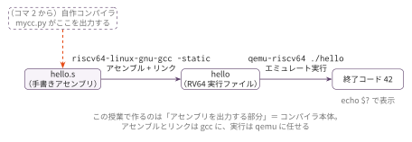

コマ0: 演習環境構築
この回の位置づけ
番号のある通常回には含めない、授業開始前の準備回である。 初回授業の開始時点で、この回の内容が終わっている状態を目標にする。 分からないところが残ったまま来てもよいが、どこで止まったかを言えるようにしておく。
ゴール
qemu 上で手書き RV64 アセンブリを実行し、終了コード 42 を確認する。
この回ではコンパイラのコードは書かない。まずは RISC-V アセンブリを手で書いて、
アセンブル・リンク・実行の流れを理解する。
必要なもの
- Python 3.10 以降（
match文、str | Noneのような合併型注釈を使う）。 Docker 環境・ネイティブ実行のどちらでも必要になる基準である - RV64 クロスコンパイラ
riscv64-linux-gnu-gcc qemu-riscv64
Docker 環境（docker/rv64/）を使えば、この3つはすべて入った状態で始められる。
Python 3.10 以降という基準は、この節が教材全体を通じての唯一の出典である （他の文書ではここを参照すること）。
1. Windows の場合: WSL 上に Ubuntu を入れる
macOS・Linux を使う場合はこの節を読み飛ばし、「2. 演習環境を用意する」へ進む。
対象は Windows 10 バージョン 2004 以降、または Windows 11。 以下は画面写真を載せていない。Windows のバージョンで表示が変わるためで、 コマンドの出力そのものを確認の手がかりにする。
手順
スタートメニューから PowerShell を「管理者として実行」 で開く。
Ubuntu 22.04 をインストールする。
wsl --install -d Ubuntu-22.04指示に従って PC を再起動する。
再起動後に自動で開く Ubuntu のウィンドウで、ユーザー名とパスワードを設定する。 このパスワードは Windows のものとは別で、
sudoを使うときに聞かれる。パッケージを最新にする。
sudo apt update sudo apt upgrade -y
Ubuntu 22.04 を指定するのは、標準の python3 が 3.10 で上の基準を満たすためである。
入ったことの確認
Ubuntu のウィンドウで次を実行する。
lsb_release -d # → Description: Ubuntu 22.04...
python3 --version # → Python 3.10 以降以降の作業はすべて、この Ubuntu の中で行う。 Windows 側のファイルではなく、Ubuntu のホームディレクトリに演習用のファイルを置くこと。
2. 演習環境を用意する
推奨は Docker である。RV64 クロスコンパイラと qemu が入った環境が用意してある
（Ubuntu 22.04 ベースなので、コンテナ内の python3 は 3.10 を満たす）。
Docker 自体を入れる
Docker がまだ無い場合、Ubuntu（WSL の中でも同じ）で次を実行する。
curl -fsSL https://get.docker.com | sh
sudo usermod -aG docker $USERusermod の後は一度ログアウトして入り直す（WSL なら Ubuntu のウィンドウを閉じて開き直す）。
docker ps が権限エラーにならずに実行できれば準備完了である。
以下は workbook/ から実行する。
# コンテナ起動（初回はイメージをビルド）
bash docker/rv64/run.sh
# 1コマンドだけ実行する
bash docker/rv64/run.sh python3 sessions/00_setup/check.py後の回でテストをまとめて走らせるときも、同じ形で使う。
bash docker/rv64/run.sh python3 scaffold/test_runner.pyネイティブ実行も許可する。その場合は Python 3.10 以降に加えて
riscv64-linux-gnu-gcc と qemu-riscv64 がホストに必要になる。
Ubuntu なら次で入る。
sudo apt install gcc-riscv64-linux-gnu qemu-user python3イメージ名の変更やよくあるエラーは docker/rv64/README.md を参照。
3. 手書きアセンブリを動かす
Step 1: hello.s を書く
配布される hello.s は終了コード 0 を返す未完成starterである。0 を 42 に変更して、以下の内容にする。
.global main
main:
addi a0, zero, 42 # 戻り値 = 42
retStep 2: コンパイルして実行
riscv64-linux-gnu-gcc -static hello.s -o hello
qemu-riscv64 ./hello
echo $? # → 4242 が表示されれば成功。

この演習で作るのは、図の hello.s にあたる「アセンブリを出力する部分」＝コンパイラ本体である。
自作コンパイラ mycc.py がこの部分を出力するようになるのは、コード生成の回からである。
Step 3: 確認スクリプト
python3 sessions/00_setup/check.pyStep 4: もっと複雑な計算
tests/ には完成済みの命令例が置いてある（一覧は後の「tests/」節を参照）。
編集対象ではないので、addi / li / add などの基本命令の組み合わせを読んで確認する。
編集するファイル
hello.s
最初に addi a0, zero, 0 を終了コード 42 を返す命令へ変更する。
tests/
| ファイル | 内容 | 期待値 |
|---|---|---|
hello.s |
addi a0, zero, 42 で戻り値 42 を返す（編集する hello.s の完成形） |
42 |
sub.s |
50 + (-8) で減算相当 |
42 |
three_numbers.s |
10 + 20 + 12 で 3 数の和 |
42 |
sub.s と three_numbers.s は完成済みの命令例であり、編集対象ではない。
テスト
python3 sessions/00_setup/check.pyこのコマンドは、編集した hello.s と完成済みの追加例2件をまとめて確認する。
個別に動かす場合は、次のようにする。
riscv64-linux-gnu-gcc -static sessions/00_setup/hello.s -o out
qemu-riscv64 ./out
echo $?終了コードが 42 になれば成功である。
注意
終了コードは 0〜255 の範囲しか返せない。
echo $? の値が合わないときは、a0 に値を入れる命令が ret より前にあるか、
ret を書き忘れていないかを確認する。
.global main を消すとリンクに失敗する。libc の起動処理が main を呼ぶためである。
おまけ: OpenCode
ターミナルで動く AI コーディングアシスタント OpenCode を入れておくと、 実装中の疑問を相談できる。必須ではないので、環境構築が終わってから余裕があれば入れればよい。
インストール手順と使い方は OpenCode 導入ガイド にまとめてある。 教員の代わりにはならないこと、生成されたコードは必ず自分で理解してテストで確認することの 2点だけ先に押さえておく。